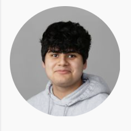
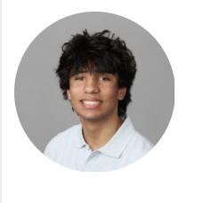
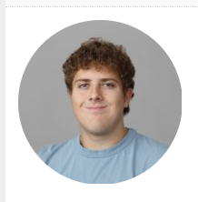
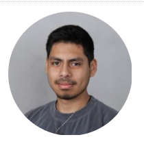

Here we have our founder! A hardworking and dedicated indivudal who has his heart set on justice. This passion followed him through his education and into his legal career, shaping the way he approaches every case. Now that he has finally gotten his law firm up and running, he is more motivated than ever to put his values into action. David is excited to serve his community and fight for those who need a strong voice in their corner. His commitment, determination, and strong moral compass drive everything he does. For him, this firm is more than a business, it is the realization of a lifelong goal.

Here we have our Attorney, Henry. Previously having thought of himself to be going down the medical road of life, he now finds himself here. Coincidentally enrolling in the same school as our founder, they have been able to form a bond over the shared interest of making an impact, and as those interests blossomed, so did the idea of this law firm.

Here is our Paralegal, John. Equally sharing the passion of spreading justice and equality, however not quite having the expertise and training, he still does his best and supports those who need his help, wether that be thru researching the current case, making sure the team stays organized or even coordinating meeting schedules.
Here is one of our interns, you cant quite tell but he sure does love his job. Quite the energenic type, he loves to keep up with the law, making sure the team is up to date with the case and ocasionally helps to organize (albeit rarely)

And lastly we have our other intern, is often seen fooling around and not taking things quite serious, can be seen often with out other intern. Brings a sense of community to the team, but can be a little troublesome.
